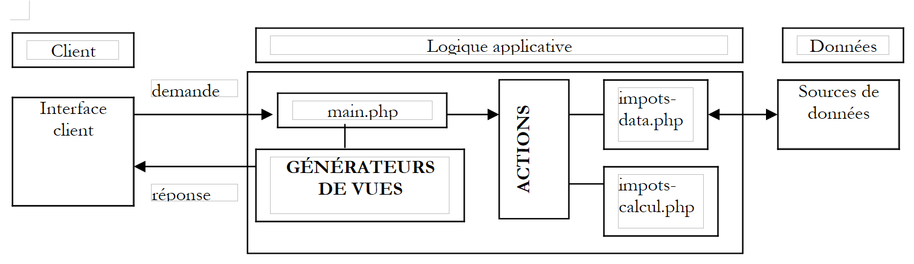
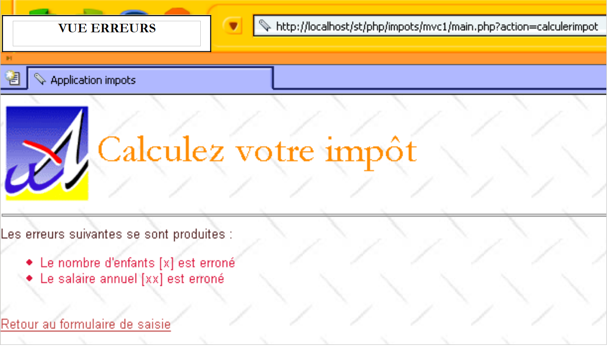
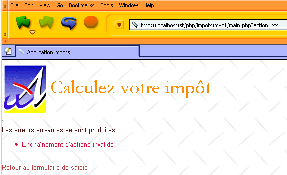

4. Una aplicación ilustrativa
Proponemos ilustrar el método anterior con un ejemplo de cálculo de impuestos.
4.1. El problema
Nos proponemos escribir un programa para calcular los impuestos de un contribuyente. Consideramos el caso simplificado de un contribuyente que sólo tiene que declarar su salario:
- Calculamos el número de tramos de tributación del trabajador: nbPartes = nbInfantes / 2 + 1 si es soltero, nbInfantes / 2 + 2 si es casado, donde nbInfantes es el número de hijos. El número de paréntesis se incrementa en 0,5 si hay tres o más hijos.
- Calculamos su base imponible R = 0,72 * S, donde S es su salario anual
- Calculamos su coeficiente de familia Q = R/N
- Calculamos su impuesto I en base a los siguientes datos
|
Cada fila tiene 3 campos: límite, coeffR, y coeffN. Para calcular el impuesto I, busque la primera fila en la que QF <= límite. Por ejemplo, si QF = 30000, la fila encontrada es: 318100,2 3309,5. El impuesto I es entonces igual a 0,2*R - 3309,5*nbParts. Si QF es tal que la condición QF <= límite no se cumple nunca, entonces se utilizan los coeficientes de la última fila: 0 0,65 49062, lo que da el impuesto I = 0,65*R - 49062*nbParts. |
4.2. La base de datos
Los datos anteriores se almacenan en una base de datos MySQL denominada dbimpots. El usuario seldbimpots con contraseña mdpseldbimpots tiene acceso de sólo lectura al contenido de la base de datos. La base de datos contiene una única tabla denominada impots con la siguiente estructura:

Su contenido es el siguiente:

4.3. La arquitectura MVC de la aplicación
La aplicación tendrá la siguiente arquitectura MVC:
|
 |
- El main.php controlador será el controlador genérico descrito anteriormente
- La solicitud del cliente'se envía al controlador en forma de una consulta de la forma main.php?action=xx. El valor del parámetro action determina qué script del bloque ACTIONS debe ejecutarse. El script de acción ejecutado devuelve una variable al controlador que indica el estado en el que debe situarse la aplicación web. Armado con este estado, el controlador activará uno de los generadores de vistas para enviar la respuesta al cliente.to execute. The executed action script returns a variable to the controller indicating the state in which the web application should be placed. Armed with this state, the controller will activate one of the view generators to send the response to the client.
- impots-data.php es la clase encargada de proporcionar al controlador los datos que necesita
- impots-calcul.php es la clase lógica de negocio que calcula el impuesto
4.4. La clase de acceso a datos
La clase de acceso a datos está diseñada para ocultar la fuente de datos de la aplicación web. Su interfaz incluye un método getData que devuelve las tres matrices de datos necesarias para calcular el impuesto. En nuestro ejemplo, los datos se recuperan de una base de datos MySQL. Para independizar la clase del tipo de SGBD real, utilizaremos la biblioteca pear::DB descrita en el apéndice. El código de la clase es el siguiente:
<?php
// libraries
require_once 'DB.php';
class impots_data{
// class for accessing the DBIMPOTS data source
// attributes
var $sDSN; // connection string
var $sDatabase; // the database name
var $oDB; // database connection
var $errors; // list of errors
var $oResults; // query result
var $connected; // Boolean indicating whether or not we are connected to the database
var $sQuery; // the last query executed
// constructor
function impots_data($dDSN){
// $dDSN: dictionary defining the connection to be established
// $dDSN['dbms']: the type of DBMS to connect to
// $dDSN['host']: the name of the host machine
// $dDSN['database']: the name of the database to connect to
// $dDSN['user']: a database user
// $dDSN['mdp']: their password
// creates a connection in $oDB to the database defined by $dDSN under the identity of $dDSN['user']
// if the connection is successful
// stores the database connection string in $sDSN
// sets $sDataBase to the name of the database being connected to
// sets $connected to true
// if the connection fails
// store the appropriate error messages in the $aErrors list
// closes the connection if necessary
// sets $connected to false
// clear the error list
$this->aErrors = array();
// create a connection to the database $sDSN
$this->sDSN = $dDSN["sgbd"] . "://" . $dDSN["user"] . ":" . $dDSN["mdp"] . "@" . $dDSN["host"] . "/" . $dDSN["database"];
$this->sDatabase = $dDSN["database"];
$this->connect();
// Connected?
if( ! $this->connected) return;
// connection successful
$this->connected = TRUE;
}//constructor
// ------------------------------------------------------------------
function connect(){
// (re)connect to the database
// clear error list
$this->errors = array();
// create a connection to the database $sDSN
$this->oDB = DB::connect($this->sDSN, true);
// error?
if(DB::iserror($this->oDB)){
// Log the error
$this->errors[] = "Failed to connect to the database [".$this->sDatabase."]: [".$this->oDB->getMessage()."]";
// Connection failed
$this->connected = FALSE;
// end
return;
}
// We are connected
$this->connected = TRUE;
}//connect
// ------------------------------------------------------------------
function disconnect(){
// if connected, close the connection to the $sDSN database
if($this->connected){
$this->oDB->disconnect();
// we are disconnected
$this->connected = FALSE;
}//if
}//disconnect
// -------------------------------------------------------------------
function execute($sQuery){
// $sQuery: query to execute
// store the query
$this->sQuery = $sQuery;
// Are we connected?
if(! $this->connected){
// log the error
$this->errors[] = "No existing connection to the database [$this->sDatabase]";
// end
return;
}//if
// execute the query
$this->oResults = $this->oDB->query($sQuery);
// error?
if(DB::iserror($this->oResults)){
// log the error
$this->errors[] = "Query [$sQuery] failed: [".$this->oResults->getMessage()."]";
// return
return;
}//if
}//execute
// ------------------------------------------------------------------
function getData(){
// retrieve the 3 data sets: limites, coeffr, coeffn
$this->execute('select limits, coeffR, coeffN from taxes');
// Any errors?
if(count($this->errors) != 0) return array();
// iterate through the result of the SELECT
while ($row = $this->oResults->fetchRow(DB_FETCHMODE_ASSOC)) {
$limits[] = $row['limits'];
$coeffr[] = $row['coeffR'];
$coeffn[] = $row['coeffN'];
}//while
return array($limits, $coeffr, $coeffn);
}//getTaxData
}//class
?>
Un programa de prueba podría tener este aspecto:
<?php
// library
require_once "c-impots-data.php";
require_once "DB.php";
// test the impots-data class
ini_set('track_errors','on');
ini_set('display_errors','on');
// dbimpots database configuration
$dDSN = array(
"db"=>"mysql",
"user"=>"seldbimpots",
"password"=>"mdpseldbimpots",
"host"=>"localhost",
"database"=>"dbimpots"
);
// Open the session
$oImpots = new impots_data($dDSN);
// errors?
if(checkErrors($oImpots)){
exit(0);
}
// progress
echo "Connected to the database...\n";
// Retrieve limit data, coeffr, coeffn
list($limits, $coeffr, $coeffn) = $oImpots->getData();
// errors?
if( ! checkErrors($oImpots)){
// content
echo "data: \n";
for($i=0;$i<count($limits);$i++){
echo "[$limits[$i],$coeffr[$i],$coeffn[$i]]\n";
}//for
}//if
// log out
$oImpots->disconnect();
// followed by
echo "Disconnected from the database...\n";
// end
exit(0);
// ----------------------------------
function checkErrors(&$oTaxes){
// Any errors?
if(count($oTaxes->errors) != 0){
// display
for($i=0;$i<count($oImpots->aErreurs);$i++){
echo $oTaxes->errors[$i]."\n";
}//for
// errors
return true;
}//if
// no errors
return false;
}//checkErrors
?>
La ejecución de este programa de prueba arroja los siguientes resultados:
Connected to the database...
data:
[12620,0,0]
[13190,0.05,631]
[15640,0.1,1290.5]
[24740,0.15,2072.5]
[31810,0.2,3309.5]
[39970,0.25,4900]
[48360,0.3,6898]
[55790,0.35,9316.5]
[92970,0.4,12106]
[127860,0.45,16754]
[151250,0.5,23147.5]
[172040,0.55,30710]
[195000,0.6,39312]
[0,0.65,49062]
Disconnected from the database...
4.5. La clase de cálculo de impuestos
Esta clase se utiliza para calcular los impuestos de un contribuyente. Los datos necesarios para este cálculo se proporcionan a su constructor. A continuación, calcula el impuesto correspondiente. El código de la clase es el siguiente:
<?php
class tax_calculation{
// tax calculation class
// constructor
function tax_calculation(&$user, &$data){
// $perso: dictionary with the following keys
// children: number of children
// salary: annual salary
// married: Boolean indicating whether the taxpayer is married or not
// tax(es): tax(es) due calculated by this constructor
// $data: dictionary with the following keys
// limits: array of tax bracket limits
// coeffr: array of income coefficients
// coeffn: array of coefficients for the number of shares
// the 3 arrays have the same number of elements
// calculation of the number of shares
if($perso['married'])
$nbParts = $perso['children'] / 2 + 2;
else $nbParts=$perso['children']/2+1;
if ($perso['children'] >= 3) $nbParts += 0.5;
// taxable income
$income = 0.72 * $person['salary'];
// family quotient
$QF = $income / $nbParts;
// find the tax bracket corresponding to QF
$nbTranches = count($data['limites']);
$i=0;
while($i<$numberOfBrackets-2 && $QF>$data['limits'][$i]) $i++;
// tax
$perso['tax'] = floor($data['coeffr'][$i] * $income - $data['coeffn'][$i] * $nbParts);
}//constructor
}//class
?>
Un programa de prueba podría tener este aspecto:
<?php
// library
require_once "c-tax-data.php";
require_once "c-tax-calculation.php";
// dbimpots database configuration
$dDSN=array(
"db"=>"mysql",
"user"=>"seldbimpots",
"password"=>"mdpseldbimpots",
"host"=>"localhost",
"database"=>"dbimpots"
);
// Open the session
$oImpots = new impots_data($dDSN);
// errors?
if(checkErrors($oImpots)){
exit(0);
}
// progress
echo "Connected to the database...\n";
// Retrieve limit data, coeffr, coeffn
list($limits, $coeffr, $coeffn) = $oImpots->getData();
// errors?
if(checkErrors($oTaxes)){
exit(0);
}
// disconnect
$oImpots->disconnect();
// Log
echo "Disconnected from the database...\n";
// calculate tax
$dData=array('limits'=>&$limits,'coeffr'=>&$coeffr,'coeffn'=>&$coeffn);
$dPerso=array('children'=>2,'salary'=>200000,'married'=>true,'tax'=>0);
new impots_calcul($dPerso, $dData);
dump($dPerso);
$dPerso = array('children' => 3, 'salary' => 200000, 'married' => false, 'tax' => 0);
new tax_calculation($dPerso, $dData);
dump($dPerso);
$dPerso = array('children' => 3, 'salary' => 20000, 'married' => true, 'tax' => 0);
new tax_calculation($person, $data);
dump($dPerso);
$dPerso = array('children' => 3, 'salary' => 2000000, 'married' => true, 'tax' => 0);
new tax_calculation($dPerso, $dData);
dump($dPerso);
// end
exit(0);
// ----------------------------------
function checkErrors(&$oTaxes){
// any errors?
if(count($oTaxes->errors) != 0){
// display
for($i=0;$i<count($oImpots->aErreurs);$i++){
echo $oTaxes->errors[$i]."\n";
}//for
// errors
return true;
}//if
// no errors
return false;
}//checkErrors
?>
La ejecución de este programa de prueba arroja los siguientes resultados:
Connected to the database...
Disconnected from the database...
[children,2] [salary,200000] [married,1] [tax,22506]
[children,3] [salary,200000] [married,] [tax,22506]
[children,3] [salary,20000] [married,1] [tax,0]
[children,3] [salary,2000000] [married,1] [tax,706752]
4.6. Cómo funciona la aplicación
Cuando se inicia la calculadora de impuestos basada en web, aparece la vista siguiente [v-form] vista:

|
El usuario rellena los campos y solicita el cálculo de impuestos:

|
Nótese que el formulario se regenera en el estado en el que el usuario lo envió y también muestra el importe del impuesto adeudado. El usuario puede cometer errores en la introducción de datos. Estos se marcan mediante una página de error, que llamaremos [v-errors] view.

|
|
 |
El enlace [Volver al formulario de entrada] permite al usuario volver al formulario tal y como lo envió.

|
Por último, el botón [Borrar formulario] devuelve el formulario a su estado inicial, es decir, tal y como lo recibió el usuario durante la solicitud inicial.
4.7. Volver a la arquitectura MVC de la aplicación
La aplicación tiene la siguiente arquitectura MVC:

|
Acabamos de describir las dos clases impots-data.php y impots-calcul.php. A continuación describiremos los demás elementos de la arquitectura.
4.8. El controlador de la aplicación
La aplicación's main.php controlador es el descrito en la primera parte de este capítulo. Es un controlador genérico independiente de la aplicación.
<?php
// generic controller
// read config
include 'config.php';
// include libraries
for($i=0;$i<count($dConfig['includes']);$i++){
include($dConfig['includes'][$i]);
}//for
// Start or resume the session
session_start();
$dSession = $_SESSION["session"];
if($dSession) $dSession=unserialize($dSession);
// retrieve the action to be performed
$sAction = $_GET['action'] ? strtolower($_GET['action']) : 'init';
$sAction = strtolower($_SERVER['REQUEST_METHOD']) . ":" . $sAction;
// Is the sequence of actions normal?
if( ! enchainementOK($dConfig,$dSession,$sAction)){
// invalid sequence
$sAction = 'invalidSequence';
}//if
// Process the action
$scriptAction = $dConfig['actions'][$sAction] ?
$dConfig['actions'][$sAction]['url'] :
$dConfig['actions']['invalidAction']['url'];
include $scriptAction;
// send the response (view) to the client
$sState = $dSession['state']['main'];
$scriptView = $dConfig['states'][$sState]['view'];
include $scriptView;
// end of script - we shouldn't get here unless there's a bug
trace ("Configuration error.");
trace("Action=[$sAction]");
trace("scriptAction=[$scriptAction]");
trace("Status=[$sStatus]");
trace("scriptView=[$scriptView]");
trace ("Verify that the scripts exist and that the [$scriptVue] script ends with a call to endSession.");
exit(0);
// ---------------------------------------------------------------
function endSession(&$dConfig,&$dResponse,&$dSession){
// $dConfig: configuration dictionary
// $dSession: dictionary containing session information
// $dResponse: dictionary of response page arguments
// session registration
if(isset($dSession)){
// store the request parameters in the session
$dSession['request'] = strtolower($_SERVER['REQUEST_METHOD']) == 'get' ? $_GET :
strtolower($_SERVER['REQUEST_METHOD']) == 'post' ? $_POST : array();
$_SESSION['session'] = serialize($dSession);
session_write_close();
}else{
// no session
session_destroy();
}
// display the response
include $dConfig['responseViews'][$dResponse['responseView']]['url'];
// end of script
exit(0);
}//end session
//--------------------------------------------------------------------
function chainOK(&$dConfig,&$dSession,$sAction){
// checks if the current action is allowed based on the previous state
$state = $dSession['state']['main'];
if(! isset($state)) $state='noState';
// action check
$allowedActions = $dConfig['states'][$state]['allowedActions'];
$authorized = ! isset($allowedActions) || in_array($sAction, $allowedActions);
return $authorized;
}
//--------------------------------------------------------------------
function dump($dInfo){
// displays a dictionary of information
while(list($key, $value) = each($dInfo)){
echo "[$key,$value]<br>\n";
}//while
}//end
//--------------------------------------------------------------------
function trace($msg){
echo $msg."<br>\n";
}//tracking
?>
4.9. Acciones de la aplicación web
Hay cuatro acciones:
- get:init: Es la acción que se dispara durante la petición inicial al controlador sin parámetros. Renderiza la vista vacía 'form'.
- post:clearform: acción desencadenada por el botón [Clear Form]. Renderiza el vacío [v-form] vista.
- post:calcularImpuesto: acción desencadenada por el botón [CalcularImpuesto]. Genera o bien el [formulariov] vista con el importe del impuesto devengado, o bien el [v-errores] vista.
- get:returnform: acción desencadenada por el enlace [Volver al formulario de entrada]. Renderiza la [v-form] vista precargada con los datos incorrectos.
Estas acciones están configuradas de la siguiente manera en el archivo de configuración:
<?php
…
// configuration of application actions
$dConfig['actions']['get:init']=array('url'=>'a-init.php');
$dConfig['actions']['post:calculateTax']=array('url'=>'a-calculateTax.php');
$dConfig['actions']['get:returnForm']=array('url'=>'a-returnForm.php');
$dConfig['actions']['post:clearform']=array('url'=>'a-init.php');
$dConfig['actions']['invalidSequence']=array('url'=>'a-invalidSequence.php');
$dConfig['actions']['invalidAction'] = array('url' => 'a-invalidAction.php');
Cada acción está asociada al script responsable de procesarla. Cada acción llevará a la aplicación web a un estado definido por el $dSession['state']['main'] element. Este estado está pensado para ser guardado en la sesión. Además, la acción almacena en el diccionario $dResponse la información necesaria para mostrar la vista asociada al nuevo estado en el que se encontrará la aplicación.
4.10. Estados de la aplicación web
Hay dos:
- [e-form]: estado en el que se muestran las distintas variantes de la [v-form] vista.
- [e-errors]: estado en el que se muestra la [v-errors] vista.
Las acciones permitidas en estos estados son las siguientes:
<?php
…
// configuration of application states
$dConfig['states']['form']=array(
'allowedActions'=>array('post:calculateTax','get:init','post:clearForm'),
'view'=>'e-form.php');
$dConfig['statuses']['errors'] = array(
'allowedActions'=>array('get:submitForm','get:init'),
'view'=>'e-errors.php');
$dConfig['states']['no-state'] = array('allowedActions' => array('get:init'));
En un estado, las acciones permitidas se corresponden con las URL de destino de los enlaces o botones [submit] de la vista asociada a ese estado. Además, la 'get:init' acción está siempre permitida. Esto permite al usuario recuperar el main.php URL desde la barra de URL de su navegador y recargarlo independientemente del estado de la aplicación. Se trata de una especie de reinicio 'manual'. El 'sansetat'estado existe sólo cuando se inicia la aplicación.
Cada estado de la aplicación está asociado a un script responsable de generar la vista asociada a ese estado:
- estado [e-form]: script e-formulaire.php
- estado [e-errors]: script e-errors.php
El [e-form] estado mostrará el [v-form] view con variaciones. De hecho, el [v-form] view puede mostrarse vacío, precargado o con el importe del impuesto. La acción que lleva la aplicación al [e-form] estado especifica el estado principal de la aplicación en el $dSession['state']['main'] variable. El controlador sólo utiliza esta información. En nuestra aplicación, la acción que lleva al [e-form] estado añadirá información adicional a $dSession['state']['secondary'], lo que permite al generador de respuestas saber si debe generar un formulario vacío, un formulario rellenado previamente o un formulario con o sin el importe del impuesto. Podríamos haber adoptado un enfoque diferente suponiendo que había tres estados diferentes y, por tanto, tres generadores de vistas que escribir.
4.11. El archivo de configuración config.php para la aplicación web
<?php
// PHP configuration
ini_set("register_globals","off");
ini_set("display_errors", "off");
ini_set("expose_php", "off");
// list of modules to include
$dConfig['includes'] = array('c-impots-data.php', 'c-impots-calcul.php');
// application controller
$dConfig['webapp'] = array('title' => "Calculate Your Tax");
// application view configuration
$dConfig['responseViews']['template1'] = array('url' => 'm-response.php');
$dConfig['responseViews']['template2'] = array('url' => 'm-response2.php');
$dConfig['views']['form'] = array('url' => 'v-form.php');
$dConfig['views']['errors'] = array('url' => 'v-errors.php');
$dConfig['views']['form2'] = array('url' => 'v-form2.php');
$dConfig['views']['errors2'] = array('url' => 'v-errors2.php');
$dConfig['views']['banner'] = array('url' => 'v-banner.php');
$dConfig['views']['menu'] = array('url' => 'v-menu.php');
$dConfig['style']['url'] = 'style1.css';
// configuration of application actions
$dConfig['actions']['get:init']=array('url'=>'a-init.php');
$dConfig['actions']['post:calculateTax'] = array('url' => 'a-calculateTax.php');
$dConfig['actions']['get:returnForm']=array('url'=>'a-returnForm.php');
$dConfig['actions']['post:clearform']=array('url'=>'a-init.php');
$dConfig['actions']['invalidSequence']=array('url'=>'a-invalidSequence.php');
$dConfig['actions']['invalidAction']=array('url'=>'a-invalidAction.php');
// configuration of application states
$dConfig['states']['e-form']=array(
'allowedActions'=>array('post:calculateTax','get:init','post:clearForm'),
'view'=>'e-form.php');
$dConfig['states']['e-errors'] = array(
'allowedActions'=>array('get:returnForm','get:init'),
'view'=>'e-errors.php');
$dConfig['statuses']['no-status']=array('allowed-actions'=>array('get:init'));
// application template configuration
$dConfig["DSN"]=array(
"db"=>"mysql",
"user"=>"seldbimpots",
"password"=>"mdpseldbimpots",
"host"=>"localhost",
"database"=>"dbimpots"
);
?>
4.12. Acciones de la aplicación web
4.12.1. Funcionamiento general de los scripts de acción
- El controlador llama a un script de acción basándose enel parámetro acciónque ha recibido del cliente. it received from the client.
- Después de la ejecución, el script de acción debe indicar al controlador el estado en el que debe situarse la aplicación. Este estado debe especificarse en $dSession['etat']['principal'].
- Un script de acción puede querer almacenar información en la sesión. Lo hace colocando esta información en el $dSession diccionario, que el controlador guarda automáticamente en la sesión al final del ciclo solicitud-respuesta.
- Un script de acción puede tener información para pasar a las vistas. Este aspecto es independiente del controlador. Es la interfaz entre acciones y vistas, una interfaz propia de cada aplicación. En el ejemplo que aquí se comenta, las acciones proporcionarán información a los generadores de vistas a través de un diccionario llamado $dResponse.
4.12.2. La acción get:init
Esta es la acción que genera el formulario vacío. El archivo de configuración muestra que será manejado por el a-init.php script:
El código del a-init.php script es el siguiente:
<?php
// display the input form
$dSession['status']=array('primary'=>'e-form', 'secondary'=>'init');
?>
Este script simplemente establece el estado en el que debe estar la aplicación-el [e-form] estado-en $dSession['etat']['principal'], y proporciona una descripción de este estado en $dSession['etat']['secondaire']. El fichero de configuración nos muestra que el controlador ejecutará el e-formulaire.php script para generar la respuesta al cliente.
<?php
…
$dConfig['states']['e-form']=array(
'allowedActions'=>array('post:calculateTax','get:init','post:clearForm'),
'view'=>'e-formulaire.php');
El e-formulaire.php script generará la [v-formulaire] vista en su variante [init], es decir, el formulario vacío.
4.12.3. La acción post:calculateTax
Esta es la acción que calcula el impuesto en base a los datos introducidos en el formulario. El archivo de configuración especifica que el a-calculimpot.php script se encargará de esta acción:
El código del a-calculimpot.php script es el siguiente:
<?php
// tax calculation request
// first, we check the validity of the parameters
$sOptMarie = $_POST['optmarie'];
if($sOptMarie!='yes' && $sOptMarie!='no'){
$errors[] = "The marital status [$sOptMarie] is incorrect";
}
$sChildren = trim($_POST['txtenfants']);
if(! preg_match('/^\d{1,3}$/',$sChildren)){
$errors[] = "The number of children [$sChildren] is incorrect";
}
$sSalary = trim($_POST['txtsalary']);
if(! preg_match('/^\d+$/',$sSalary)){
$errors[] = "The annual salary [$sSalary] is incorrect";
}
// if there are errors, the process is over
if(count($errors)!=0){
// prepare the error page
$dResponse['errors'] = &$errors;
$dSession['status'] = array('main' => 'error', 'secondary' => 'input');
return;
}//if
// the entered data is correct
// retrieve the data needed to calculate the tax
if(! $dSession['limits']){
// the data is not in the session
// retrieve it from the data source
list($errors, $limits, $coeffr, $coeffn) = getData($dConfig['DSN']);
// if there are errors, display the error page
if(count($errors) != 0){
// prepare the error page
$dResponse['errors'] = &$errors;
$dSession['status'] = array('primary' => 'errors', 'secondary' => 'database');
return;
}//if
// no errors - data is placed in the session
$dSession['limits']=&$limits;
$dSession['coeffr']=&$coeffr;
$dSession['coeffn']=&$coeffn;
}//if
// here we have the data needed to calculate the tax
// we calculate the tax
$dData = array('limits' => &$dSession['limits'],
'coeffr'=>&$dSession['coeffr'],
'coeffn'=>&$dSession['coeffn']);
$dPerso=array('children'=>$sChildren,'salary'=>$sSalary,'married'=>($sOptMarried=='yes'),'tax'=>0);
new impots_calcul($dPerso,$dData);
// preparing the response page
$dSession['status']=array('main'=>'e-form','secondary'=>'taxCalc');
$dResponse['tax'] = $dPerson['tax'];
return;
//-----------------------------------------------------------------------
function getData($dDSN){
// Connect to the data source defined by the $dDSN dictionary
$oTaxes = new Taxes_Data($dDSN);
if(count($oImpots->aErreurs)!=0) return array($oImpots->aErreurs);
// retrieve limit data, coeffr, coeffn
list($limits, $coeffr, $coeffn) = $oImpots->getData();
// disconnect
$oTaxes->disconnect();
// return the result
if(count($oImpots->aErreurs)!=0) return array($oImpots->aErreurs);
else return array(array(), $limits, $coeffr, $coeffn);
}//getData
El script hace lo que'debe hacer: calcular el impuesto. Dejaremos al lector que descifre el código de procesamiento. Nos interesan los estados que pueden surgir como resultado de esta acción:
- los datos introducidos son incorrectos o hay un problema de acceso a los datos: la aplicación se establece en el [e-errors] estado. El fichero de configuración muestra que el e-errors.php script será el encargado de generar la vista de respuesta:
- En todos los demás casos, la aplicación se establece en el [e-form] estado con la variante de cálculo de impuestosespecificada en specified in $dSession['state']['secondary']. El archivo de configuración muestra que el e-formulaire.php script generará la vista de respuesta. Utilizará el valor de $dSession['state']['secondary'] para generar un formulario pre-rellenado con los valores introducidos por el usuario y el importe del impuesto.
4.12.4. El post:efacerformulaire acción
Se asocia por configuración con el a-init.php script ya descrito.
4.12.5. La acción get:return-form
Permite volver al [e-formulario] estado desde el [e-errores] estado.El a-retourformulaire.php script maneja esta acción:
El a-retourformulaire.php script es el siguiente:
<?php
// display the input form
$dSession['state']=array('main'=>'e-form','secondary'=>'returnform');
?>
Simplemente pedimos que la aplicación se ponga en el [e-form] estado en su [form-return] variante. El fichero de configuración nos muestra que el controlador ejecutará el e-form.php script para generar la respuesta al cliente.
<?php
…
$dConfig['states']['e-form'] = array(
'allowedActions'=>array('post:calculateTax','get:init','post:clearForm'),
'view'=>'e-formulaire.php');
El e-formulaire.php script generará la [v-formulaire] vista en su [retourformulaire] variante, es decir, el formulario pre-rellenado con los valores introducidos por el usuario pero sin el importe del impuesto.
4.13. Secuencia de acción no válida
Las acciones válidas desde un estado determinado de la aplicación se establecen por configuración:
<?php
…
// application state configuration
$dConfig['states']['e-form']=array(
'allowedActions'=>array('post:calculateTax','get:init','post:clearForm'),
'view'=>'e-form.php');
$dConfig['states']['e-errors'] = array(
'allowedActions'=>array('get:returnForm','get:init'),
'view'=>'e-errors.php');
$dConfig['states']['no-state']=array('allowed-actions'=>array('get:init'));
Ya hemos explicado esta configuración. Si se detecta una secuencia de acciones no válida, se ejecuta el script a-invalid-sequence.php :
El código de este script es el siguiente:
<?php
// Invalid sequence of actions
$dResponse['errors'] = array("Invalid action sequence");
$dSession['status'] = array('primary' => 'e-errors', 'secondary' => 'invalid-sequence');
?>
Esto establece la aplicación en el [e-errors] estado. Proporcionamos información en $dSession['state']['secondary'] que será utilizada por el generador de páginas de error. Como ya hemos visto, este generador es e-errors.php:
<?php
…
$dConfig['states']['e-errors']=array(
'allowedActions'=>array('get:formSubmit','get:init'),
'view'=>'e-errors.php');
Más adelante veremos el código de este generador. La vista enviada al cliente es la siguiente:

4.14. Vistas de la aplicación'
4.14.1. Mostrar la vista final
Veamos cómo el controlador envía la respuesta al cliente una vez que la acción solicitada por el cliente ha sido ejecutada:
<?php
…
....
// start or resume the session
session_start();
$dSession = $_SESSION["session"];
if($dSession) $dSession=unserialize($dSession);
// retrieve the action to be performed
$sAction = $_GET['action'] ? strtolower($_GET['action']) : 'init';
$sAction = strtolower($_SERVER['REQUEST_METHOD']) . ":" . $sAction;
// Is the sequence of actions normal?
if( ! enchainementOK($dConfig,$dSession,$sAction)){
// invalid sequence
$sAction = 'invalidSequence';
}//if
// Process the action
$scriptAction = $dConfig['actions'][$sAction] ?
$dConfig['actions'][$sAction]['url'] :
$dConfig['actions']['invalidAction']['url'];
include $scriptAction;
// send the response (view) to the client
$sState = $dSession['state']['main'];
$scriptView = $dConfig['states'][$sState]['view'];
include $scriptView;
.....
// ---------------------------------------------------------------
function endSession(&$dConfig,&$dResponse,&$dSession){
// $dConfig: configuration dictionary
// $dSession: dictionary containing session information
// $dResponse: dictionary of response page arguments
// session storage
...
// sending the response to the client
include $dConfig['responseViews'][$dResponse['responseView']]['url'];
// end of script
exit(0);
}//end session
Al volver de un script de acción, el controlador recupera el estado en el que debe establecer la aplicación desde $dSession['etat']['principal']. Este estado fue establecido por la acción que se acaba de ejecutar. A continuación, el controlador ejecuta el generador de vistas asociado a ese estado. Encuentra el nombre del generador de vistas en el archivo de configuración. La función del generador de vistas es la siguiente:
- Establece el nombre de la plantilla de respuesta que se utilizará en $dResponse['responseView']. Esta información se pasará al controlador. Una plantilla es una composición de vistas básicas que, combinadas, forman la vista final.
- Prepara la información dinámica que se mostrará en la vista final. Este paso es independiente del controlador. Sirve de interfaz entre el generador de vistas y la vista final. Es específico de cada aplicación.
- debe terminar con una llamada a la función del controlador finSession. Esta función
- guardar la sesión
- enviar la respuesta
El código de la función finSession es el siguiente:
<?php
…
// ---------------------------------------------------------------
function endSession(&$dConfig,&$dResponse,&$dSession){
// $dConfig: configuration dictionary
// $dSession: dictionary containing session information
// $dResponse: dictionary of response page arguments
// session storage
...
// sending the response to the client
include $dConfig['responseViews'][$dResponse['responseView']]['url'];
// end of script
exit(0);
}//end session
La vista enviada al usuario está definida por la $dResponse['responseView'] entidad, que define la plantilla a utilizar para la respuesta final.
4.14.2. Plantilla de respuesta
La aplicación generará sus distintas respuestas en base a la siguiente plantilla única:

|
Esta plantilla está asociada a la 'modele1'clave del $dConfig['vuesreponse'] diccionario:
El m-reponse.php script es el responsable de generar esta plantilla:
<html>
<head>
<title>Tax Application</title>
<link type="text/css" href="<?php echo $dReponse['urlstyle'] ?>" rel="stylesheet" />
</head>
<body>
<?php
include $dReponse['vue1'];
?>
<hr>
<?php
include $dResponse['view2'];
?>
</body>
</html>
Este script tiene tres elementos dinámicos almacenados en un diccionario $dReponse y asociados a las siguientes claves:
- urlstyle: URL de la hoja de estilos de la plantilla
- vista1: nombre del script responsable de generar la vista1 vista
- vue2: nombre del script responsable de generar la vue2 vista
Un generador de vistas que desee utilizar la plantilla modèle1 debe definir estos tres elementos dinámicos. Ahora definimos las vistas básicas que pueden sustituir a los elementos [vue1] y [vue2] de la plantilla.
4.14.3. La vista básica v-bandeau.php
El v-bandeau.php script genera una vista que se colocará en la zona [vue1]:
<table>
<tr>
<td><img src="univ01.gif"></td>
<td>
<table>
<tr>
<td><div class='title'><?php echo $dResponse['title'] ?></div></td>
</tr>
<tr>
<td><div class='result'><?php echo $dResponse['result']?></div></td>
</tr>
</table>
</td>
</tr>
</table>
El generador de vistas debe definir dos elementos dinámicos ubicados en un diccionario $dReponse y asociados a las siguientes claves:
- title: título a mostrar
- resultado: importe de la deuda tributaria
4.14.4. La vista básica v-form.php
La sección [vue2] corresponde ala [v-form] vista o la [v-errors] vista. La [v-form] vista es generada por el v-formulaire.php script:
<form method="post" action="main.php?action=calculerimpot">
<table>
<tr>
<td class="label">Are you married?</td>
<td class="value">
<input type="radio" name="optmarie" <?php echo $dReponse['optoui'] ?> value="yes">yes
<input type="radio" name="optmarie" <?php echo $dReponse['optnon'] ?> value="no">no
<td>
<tr>
<td class="label">Number of children</td>
<td class="value">
<input type="text" class="text" name="txtenfants" size="3" value="<?php echo $dReponse['enfants'] ?>"
</td>
</tr>
<tr>
<td class="label">Annual salary</td>
<td class="value">
<input type="text" class="text" name="txtsalaire" size="10" value="<?php echo $dReponse['salaire'] ?>"
</td>
</tr>
</table>
<hr>
<input type="submit" class="submit" value="Calculate Tax">
</form>
<form method="post" action="main.php?action=clearform">
<input type="submit" class="submit" value="Clear form">
</form>
Las partes dinámicas de esta vista que deben ser definidas por el generador de vistas están asociadas a las siguientes claves en el $dReponse diccionario:
- optoui: estado del botón de opción denominado optoui
- optnon: estado del botón de opción denominado optnon
- hijos: número de hijos que se colocarán en el campo txtenfants
- salario: salario anual que se colocará en el campo txtsalario
4.14.5. La vista básica v-erreurs.php
La [v-errors] vista es generada por el v-errors.php script:
The following errors occurred:
<ul>
<?php
for($i=0;$i<count($dResponse["errors"]);$i++){
echo "<li class='error'>".$dResponse["errors"][$i]."</li>\n";
}//for
?>
</ul>
<div class="info"><?php echo $dReponse["info"] ?></div>
<br>
<a href="<?php echo $dResponse["href"] ?>"><?php echo $dResponse["link"] ?></a>
Las partes dinámicas de esta vista a definir por el generador de vistas están asociadas a las siguientes claves en el $dReponse diccionario:
- errores: array de mensajes de error
- info: mensaje de información
- enlace: texto de un enlace
- href: URL de destino del enlace anterior
4.14.6. La hoja de estilo
Todas las vistas tienen una hoja de estilos. Para cambiar el aspecto visual de la aplicación, se modifica su hoja de estilos. La hoja de estilos style1.css stylesheet:
div.menu {
background-color: #FFD700;
color: #F08080;
font-weight: bolder;
text-align: center;
}
td.separator {
background: #FFDAB9;
width: 20px;
}
table.model2 {
width: 600px;
}
BODY {
background-image: url(standard.jpg);
margin-left: 0px;
margin-top: 6px;
color: #4A1919;
font-size: 10pt;
font-family: Arial, Helvetica, sans-serif;
scrollbar-face-color: #F2BE7A;
scrollbar-arrow-color: #4A1919;
scrollbar-track-color: #FFF1CC;
scrollbar-3dlight-color: #CBB673;
scrollbar-darkshadow-color: #CBB673;
}
div.title {
font: 30pt Garamond;
color: #FF8C00;
background-color: Yellow;
}
table.menu {
background-color: #ADD8E6;
}
A:hover {
text-decoration: underline;
color: #FF0000;
background-color: transparent;
}
A:ACTIVE {
text-decoration: underline;
color: #BF4141;
background-color: transparent;
}
A:VISITED {
color: #BF4141;
background-color: transparent;
}
.error {
color: red;
font-weight: bold;
}
INPUT.text {
margin-left: 3px;
font-size: 8pt;
font-weight: bold;
color: #4A1919;
background-color: #FFF6E0;
border-right: 1px solid;
border-left: 1px solid;
border-top: 1px solid;
border-bottom: 1px solid;
}
td.label {
background-color: #F0FFFF;
color: #0000CD;
}
td.value {
background-color: #DDA0DD;
}
DIV.result {
background-color: #FFA07A;
font: bold 12pt;
}
div.info {
color: #FA8072;
}
li.error {
color: #DC143C;
}
INPUT.submit {
margin-left: 6px;
font-size: 8pt;
font-weight: bold;
color: #4A1919;
background-color: #FFF1CC;
border-right: 1px solid;
border-left: 1px solid;
border-top: 1px solid;
border-bottom: 1px solid;
}
4.15. Ver generadores
4.15.1. Función de un generador de vistas
Revisemos el fragmento de código del controlador que ejecuta un generador de vistas:
<?php
…
// processing the action
$scriptAction = $dConfig['actions'][$sAction] ?
$dConfig['actions'][$sAction]['url']:
$dConfig['actions']['invalidAction']['url'];
include $scriptAction;
// send the response (view) to the client
$sState = $dSession['state']['main'];
$scriptView = $dConfig['states'][$sState]['view'];
include $viewScript;
Un generador de vistas está vinculado al estado en el que se colocará la aplicación. El vínculo entre el estado y el generador de vistas se establece mediante la configuración:
<?php
…
// configuration of application states
$dConfig['states']['e-form']=array(
'allowedActions'=>array('post:calculateTax','get:init','post:clearForm'),
'view'=>'e-form.php');
$dConfig['states']['e-errors'] = array(
'allowedActions'=>array('get:returnForm','get:init'),
'view'=>'e-errors.php');
$dConfig['states']['no-state']=array('allowed-actions'=>array('get:init'));
Ya hemos explicado la función de un generador de vistas. Vamos a repasarlo aquí. Un generador de vistas:
- establece el nombre de la plantilla de respuesta que se utilizará en $dResponse['responseView']. Esta información se pasará al controlador. Una plantilla es una composición de vistas básicas que, combinadas, forman la vista final.
- prepara la información dinámica que se mostrará en la vista final. Este paso es independiente del controlador. Sirve de interfaz entre el generador de vistas y la vista final. Es específico de cada aplicación.
- debe terminar con una llamada a la función controller's finSession. Esta función
- guardar la sesión
- enviar la respuesta
4.15.2. El generador de vistas asociado al estado [e-form]
El script responsable de generar la vista asociada al [e-form] estado se llama e-form.php:
<?php
…
$dConfig['reports']['e-form']=array(
'allowedActions'=>array('post:calculateTax','get:init','post:clearForm'),
'view'=>'e-formulaire.php');
Su código es el siguiente:
<?php
// prepare the form response
$dResponse['title'] = $dConfig['webapp']['title'];
$dResponse['responseView'] = 'template1';
$dResponse['view1'] = $dConfig['views']['banner']['url'];
$response['view2'] = $config['views']['form']['url'];
$dResponse['urlstyle'] = $dConfig['style']['url'];
$dResponse['title'] = $dConfig['webapp']['title'];
// configuration based on the type of form to generate
$type = $dSession['status']['secondary'];
if($type == 'init') {
// empty form
$dResponse['optnon'] = 'checked';
}//if
if($type=='taxcalculation'){
// we need to re-display the input parameters stored in the request
$dResponse['optyes'] = $_POST['optmarry'] == 'yes' ? 'checked' : '';
$dResponse['optno'] = $dResponse['optyes'] ? '' : 'checked';
$dResponse['children'] = $_POST['childrenCount'];
$response['salary'] = $_POST['salary'];
$dResponse['result'] = 'Tax due: ' . $dResponse['tax'] . ' F';
}//if
if($type=='formSubmit'){
// we need to re-display the input parameters stored in the session
$dResponse['optyes'] = $_SESSION['request']['optmarry'] == 'yes' ? 'checked' : '';
$dResponse['optno'] = $dResponse['optyes'] == '' ? 'checked' : '';
$dResponse['children'] = $dSession['request']['childrenCount'];
$dResponse['salary'] = $dSession['request']['salaryText'];
}//if
// send the response
finSession($dConfig, $dResponse, $dSession);
?>
Nota que el generador de vistas cumple con los requisitos para un generador de vistas:
- establece la plantilla de respuesta a utilizar en $dReponse['vuereponse']
- pasa información a esta plantilla. Aquí, se pasa a través del diccionario $dResponse.
- termina llamando a la función controller's finSession
Aquí, la plantilla utilizada es 'template1'. Por lo tanto, el generador de vistas define las dos piezas de información requeridas por esta plantilla: $dResponse['vista1'] y $dResponse['vista2'].
En el caso concreto de nuestra aplicación, la vista asociada al [e-form] estado depende de la información almacenada en la variable $dSession['etat']['secondaire']. Esta es una elección de diseño. Otra aplicación podría optar por pasar información adicional de otra manera. Además, aquí toda la información necesaria para mostrar la vista final se coloca en el $dReponse diccionario. De nuevo, esta es una elección que se deja al desarrollador. El [e-form] estado puede ocurrir después de cuatro acciones diferentes: init, calculateTax, returnForm, clearForm. La vista a mostrar no es exactamente la misma en todos los casos. Por ello, aquí hemos distinguido tres casos en $dSession['state']['secondary']:
- init: el formulario se muestra vacío
- calcularImpuesto: se muestra el formulario con el importe del impuesto y los datos utilizados para calcularlo
- returnform: se muestra el formulario con los datos introducidos inicialmente
Por encima, el e-formulaire.php script utiliza esta información para presentar la respuesta según estas tres variantes.
4.15.3. La vista asociada al estado [e-errors]
El script responsable de generar la vista asociada al [e-errors] estado se llama e-errors.php y es el siguiente:
<?php
// prepare the error response
$dResponse['title'] = $dConfig['webapp']['title'];
$dResponse['responseView'] = 'template1';
$dResponse['view1'] = $dConfig['views']['header']['url'];
$response['view2'] = $config['views']['errors']['url'];
$response['urlstyle'] = $config['style']['url'];
$dResponse['title'] = $dConfig['webapp']['title'];
$response['link'] = 'Back to the input form';
$dResponse['href'] = 'main.php?action=returnform';
// additional information
$type = $dSession['status']['secondary'];
if($type=='database'){
$dResponse['info'] = "Please notify the application administrator";
}
// send the response
finSession($dConfig, $dResponse, $dSession);
?>
4.15.4. Mostrar la vista final
Ambos scripts que generan las dos vistas finales terminan con una llamada a la función controller's finSession::
<?php
…
function finSession(&$dConfig,&$dResponse,&$dSession){
// $dConfig: configuration dictionary
// $dSession: dictionary containing session information
// $dResponse: the dictionary of response page arguments
....
// display the response
include $dConfig['responseViews'][$dResponse['responseView']]['url'];
// end of script
exit(0);
}//end session
La vista enviada al usuario está definida por la $dResponse['responseView'] entidad, que especifica la plantilla a utilizar para la respuesta final. Para los [e-form] y [e-errors] estados, esta plantilla se ha establecido en plantilla1:
Esta plantilla corresponde al m-reponse.php script:
4.16. Modificación de la plantilla de respuesta
Aquí, suponemos que decidimos cambiar el aspecto visual de la respuesta enviada al cliente, y nos interesa entender las implicaciones que esto tiene en el código.
4.16.1. La nueva plantilla
La estructura de la respuesta será ahora la siguiente:

|
Esta plantilla se llamará plantilla2, y el script responsable de generar esta plantilla se llamará m-respuesta2.php:
El script correspondiente a esta plantilla es el siguiente:
<html>
<head>
<title>Tax Application</title>
<link type="text/css" href="<?php echo $dResponse['urlstyle'] ?>" rel="stylesheet" />
</head>
<body>
<table class='modele2'>
<!-- banner start -->
<tr>
<td colspan="2"><?php include $dReponse['vue1']; ?></td>
</tr>
<!-- end banner -->
<tr>
<!-- start menu -->
<td><?php include $dReponse['view2']; ?></td>
<!-- end menu -->
<!-- start zone 3 -->
<td><?php include $dReponse['view3']; ?></td>
<!-- end of section 3 -->
</tr>
</table>
</body>
</html>
Los elementos dinámicos de la plantilla son los siguientes:
- $dReponse['urlstyle']: la hoja de estilo a utilizar
- $dReponse['vue1']: el script a utilizar para generar [vue1]
- $dReponse['vue2']: el script a utilizar para generar [vue2]
- $dReponse['vue3']: el script a utilizar para generar [vue3]
Estos elementos deben ser establecidos por los generadores de vistas.
4.16.2. Las diferentes páginas de respuesta
La aplicación presentará ahora las siguientes respuestas al usuario. Tras la llamada inicial, la página de respuesta será la siguiente:

|
Si el usuario proporciona datos válidos, se calcula el impuesto:

|
Si cometen errores de entrada, se muestra la página de error:

|
Si utilizan el enlace [Volver al formulario de entrada], verán el formulario tal y como lo enviaron la última vez:

|
Si, en el escenario anterior, utilizan el enlace [Restablecer formulario], verán un formulario vacío:

|
Nota que la aplicación utiliza las mismas acciones que antes. Sólo ha cambiado la apariencia de las respuestas.
4.16.3. Vistas básicas
La vista básica [view1] estará asociada al v-bandeau.php script, como en el ejemplo anterior:
<table>
<tr>
<td><img src="univ01.gif"></td>
<td>
<table>
<tr>
<td><div class='title'><?php echo $dResponse['title'] ?></div></td>
</tr>
<tr>
<td><div class='result'><?php echo $dResponse['result']?></div></td>
</tr>
</table>
</td>
</tr>
</table>
Esta vista tiene dos elementos dinámicos:
- $dResponse['title']: título a mostrar
- $dReponse['resultat']: importe del impuesto adeudado
La vista básica [vue2] se asociará con el siguiente v-menu.php script:
<table class="menu">
<tr>
<td><div class="menu">Options</div></td>
</tr>
<?php
for($i=0;$i<count($dReponse['links']);$i++){
echo '<tr><td><div class="option"><a href="'.
$dResponse['links'][$i]['url'].
'">'.$dReponse['links'][$i]['text']."</a></div></td></tr>\n";
}//$i
?>
</table>
Esta vista tiene los siguientes elementos dinámicos:
- $dResponse['links']: array de enlaces a mostrar en [view2]. Cada elemento del array es un diccionario con dos claves:
- 'url': la URL de destino del enlace'
- 'texto': texto del enlace
La vista básica [view3] se asociará con el v-form2.php script si quieres mostrar el formulario de entrada, o con el v-errors2.php script si quieres mostrar la página de error. El código para el v-form2.php script es el siguiente:
<form method="post" action="main.php?action=calculerimpot">
<table>
<tr>
<td class="label">Are you married?</td>
<td class="value">
<input type="radio" name="optmarie" <?php echo $dReponse['optoui'] ?> value="yes">yes
<input type="radio" name="optmarie" <?php echo $dReponse['optnon'] ?> value="no">no
</td>
</tr>
<tr>
<td class="libelle">Number of children</td>
<td class="value">
<input type="text" class="text" name="txtenfants" size="3" value="<?php echo $dReponse['enfants'] ?>"
</td>
</tr>
<tr>
<td class="label">Annual salary</td>
<td class="value">
<input type="text" class="text" name="txtsalaire" size="10" value="<?php echo $dReponse['salaire'] ?>"
</td>
</tr>
<tr>
<td colspan="2" align="center"><input type="submit" class="submit" value="Calculate Tax"></td>
</tr>
</table>
</form>
Las partes dinámicas de esta vista que deben ser definidas por el generador de vistas están asociadas a las siguientes claves en el $dReponse diccionario:
- optoui: estado del botón de opción denominado optoui
- optnon: estado del botón de opción denominado optnon
- hijos: número de hijos que se colocarán en el campo txtenfants
- salaire: salario anual que se colocará en el campo txtsalaire
El script que genera la página de error se llama v-erreurs2.php. Su código es el siguiente:
The following errors occurred:
<ul>
<?php
for($i=0;$i<count($dResponse["errors"]);$i++){
echo "<li class='error'>".$dResponse["errors"][$i]."</li>\n";
}//for
?>
</ul>
<div class="info"><?php echo $dResponse["info"] ?></div>
Las partes dinámicas de esta vista a definir por el generador de vistas están asociadas a las siguientes claves en el $dReponse diccionario:
- errores: array de mensajes de error
- info: mensaje de información
4.16.4. La hoja de estilo
No ha cambiado. It's still style1.css.
4.16.5. El nuevo fichero de configuración
Para implementar estas nuevas vistas, necesitamos modificar ciertas líneas del archivo de configuración.
<?php
// PHP configuration
ini_set("register_globals","off");
ini_set("display_errors", "off");
ini_set("expose_php", "off");
// list of modules to include
$dConfig['includes'] = array('c-impots-data.php', 'c-impots-calcul.php');
// application controller
$dConfig['webapp'] = array('title' => "Calculate your tax");
// application view configuration
$dConfig['responseViews']['template1'] = array('url' => 'm-response.php');
$dConfig['responseViews']['template2'] = array('url' => 'm-response2.php');
$dConfig['views']['form'] = array('url' => 'v-form.php');
$dConfig['views']['errors'] = array('url' => 'v-errors.php');
$dConfig['views']['form2'] = array('url' => 'v-form2.php');
$dConfig['views']['errors2'] = array('url' => 'v-errors2.php');
$dConfig['views']['banner'] = array('url' => 'v-banner.php');
$dConfig['views']['menu'] = array('url' => 'v-menu.php');
$dConfig['style']['url'] = 'style1.css';
// configuration of application actions
$dConfig['actions']['get:init']=array('url'=>'a-init.php');
$dConfig['actions']['post:calculateTax'] = array('url' => 'a-calculateTax.php');
$dConfig['actions']['get:returnForm']=array('url'=>'a-returnForm.php');
$dConfig['actions']['post:clearform']=array('url'=>'a-init.php');
$dConfig['actions']['invalidSequence']=array('url'=>'a-invalidSequence.php');
$dConfig['actions']['invalidAction']=array('url'=>'a-invalidAction.php');
// configuration of application states
$dConfig['states']['e-form']=array(
'allowedActions'=>array('post:calculateTax','get:init','post:clearForm'),
'view'=>'e-form2.php');
$dConfig['statuses']['e-errors'] = array(
'allowedActions'=>array('get:returnForm','get:init'),
'view'=>'e-errors2.php');
$dConfig['states']['no-state'] = array('allowed-actions' => array('get:init'));
// application model configuration
$dConfig["DSN"] = array(
"db"=>"mysql",
"user"=>"seldbimpots",
"password"=>"mdpseldbimpots",
"host"=>"localhost",
"database"=>"dbimpots"
);
?>
El cambio clave consiste en actualizar los generadores de vistas asociados a los informes [e-form] y [e-errors]. Una vez hecho esto, los nuevos generadores de vistas se encargan de generar las nuevas páginas de respuesta.
4.16.6. El generador de vistas asociado al informe [e-form]
En el fichero de configuración, el [e-form] estado está ahora asociado al e-form2.php generador de vistas. El código de este script es el siguiente:
<?php
// prepare the form response
$dResponse['title'] = $dConfig['webapp']['title'];
$dResponse['responseView'] = 'template2';
$dResponse['view1'] = $dConfig['views']['header']['url'];
$response['page2'] = $config['pages']['menu']['url'];
$dResponse['view3'] = $dConfig['views']['form2']['url'];
$dResponse['urlstyle'] = $dConfig['style']['url'];
$dResponse['title'] = $dConfig['webapp']['title'];
$dResponse['links'] = array(
array('text'=>'Reset form', 'url'=>'main.php?action=init')
);
// configuration based on the type of form to generate
$type = $dSession['status']['secondary'];
if($type=='init'){
// empty form
$dResponse['optnon'] = 'checked';
}//if
if($type=='taxcalculation'){
// we need to re-display the input parameters stored in the request
$dResponse['optyes'] = $_POST['optmarry'] == 'yes' ? 'checked' : '';
$dResponse['optno'] = $dResponse['optyes'] ? '' : 'checked';
$dResponse['children'] = $_POST['childrenCount'];
$dResponse['salary'] = $_POST['salary'];
$dResponse['result'] = 'Tax due: ' . $dResponse['tax'] . ' F';
}//if
if($type=='formSubmit'){
// we need to re-display the input parameters stored in the session
$dResponse['optyes'] = $_SESSION['request']['optmarry'] == 'yes' ? 'checked' : '';
$dResponse['optno'] = $dResponse['optyes'] == '' ? 'checked' : '';
$dResponse['children'] = $dSession['request']['childrenCount'];
$dResponse['salary'] = $dSession['request']['salaryText'];
}//if
// send the response
finSession($dConfig, $dResponse, $dSession);
?>
Los principales cambios son los siguientes:
- El generador de vistas indica que quiere utilizar la plantilla de respuesta modele2
- por ello, rellena los elementos dinámicos $dReponse['vue1'], $dReponse['vue2'], $dReponse['vue3'], los tres requeridos por la plantilla de respuesta modele2.
- El generador de vistas también rellena el elemento dinámico $dResponse['links'], que establece los enlaces que se mostrarán en el área [view2] de la respuesta.
4.16.7. El generador de vistas asociado al estado [e-errors]
En el fichero de configuración, el [e-errors] estado está ahora asociado al e-errors2.php generador de vistas. El código de este script es el siguiente:
<?php
// prepare the error response
$dResponse['title'] = $dConfig['webapp']['title'];
$dResponse['responseView'] = 'template2';
$dResponse['view1'] = $dConfig['views']['header']['url'];
$response['page2'] = $config['pages']['menu']['url'];
$response['page3'] = $config['pages']['errors2']['url'];
$dResponse['urlstyle'] = $dConfig['style']['url'];
$dResponse['title'] = $dConfig['webapp']['title'];
$dResponse['links'] = array(
array('text'=>'Back to the input form', 'url'=>'main.php?action=retourformulaire')
);
// additional information
$type = $dSession['status']['secondary'];
if($type=='database'){
$dResponse['info'] = "Please notify the application administrator";
}
// send the response
finSession($dConfig, $dResponse, $dSession);
?>
Los cambios realizados son idénticos a los realizados en el e-formulaire2.php generador de vistas.
4.17. Conclusión
Pudimos demostrar, mediante un ejemplo, las ventajas de nuestro controlador genérico. No tuvimos que escribirlo nosotros mismos. Simplemente escribimos los scripts de acción, los generadores de vistas y las vistas para la aplicación. También demostramos los beneficios de separar las acciones de las vistas. Esto nos permitió cambiar la apariencia de las respuestas sin modificar una sola línea de código en los scripts de acción. Sólo se modificaron los scripts implicados en la generación de vistas. Para que esto sea posible, el script de acción no debe hacer suposiciones sobre la vista que mostrará la información que ha calculado. Simplemente debe devolver esta información al controlador, que la pasa al generador de vistas para que le dé formato. Esta es una regla absoluta: una acción debe estar completamente desacoplada de las vistas.
En este capítulo, hemos explorado la filosofía Struts, bien conocida por los desarrolladores Java. Un proyecto de código abierto llamado php.mvc permite el desarrollo web/PHP utilizando la filosofía Struts. Visite http://www.phpmvc.net/ para más información.